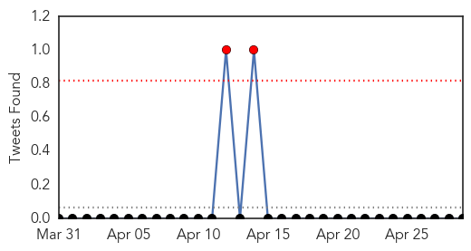
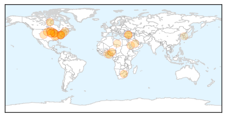
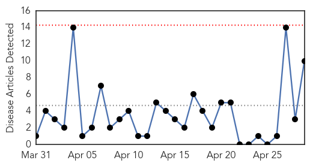
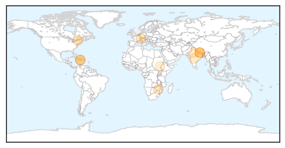

Influenza
30-Day Web Trend
2 alerts, 0 warnings

30-Day Twitter Trend
2 alerts, 0 warnings

Article Locations
Article Confidences

Top Articles:
- 0.977
- OUR VIEW: Make extra effort to avoid spreading flu next year
- 0.967
- Pet Owner Says Her Dogs Contracted Canine Flu From Animal
- 0.959
- Poultry imports from Burkina Faso banned
- 0.951
- Poultry in Midwest Infected with Bird Flu, Illinois Prepares
- 0.948
- La. poultry producers keep wary eye on bird flu
- 0.943
- Agriculture department monitoring spread of avian influenza
- 0.934
- Bird flu leapfrogged, Northwest to Midwest
- 0.925
- USDA developing H5 vaccine
- 0.916
- Flu Scan for Apr 29, 2015
- 0.870
- Vaccination – the best way to fight disease
- 0.810
- Benefits of immunisation outweigh risks –Specialist
- 0.794
- U.S. Bird Flu Outbreak Spreads to Millions of Iowa Egg Hens
- 0.779
- Groups ask for full lab funding during bird flu crisis
- 0.758
- Gov. Dayton carves up bird to show turkey is still safe to eat amid avian flu outbreak
- 0.751
- April 29, 2015 Archives
- 0.751
- April 29, 2015 Archives
- 0.751
- April 28, 2015 Archives
- 0.751
- April 28, 2015 Archives
- 0.751
- April 28, 2015 Archives
- 0.751
- April 28, 2015 Archives
- 0.751
- April 28, 2015 Archives
- 0.751
- April 28, 2015 Archives
- 0.745
- WTNH Connecticut News
- 0.695
- Bird flu ebbing in Minnesota as Iowa cases rise
- 0.659
- Bird flu ebbs in Minnesota as Iowa cases rise
- 0.655
- NEPAL Nepal earthquake: apostolic vicar calls on everyone to help in this time of crisis
- 0.638
- Avian flu strikes 2 more Stearns County farms
- 0.572
- Bird flu alert: Agric Ministry bans poultry products from Burkina Faso
- 0.532
- Tracing the bird flu outbreak in U.S. poultry flocks
- 0.527
- Dog Flu Update: Join Free Google Hangout
Top Tweets:
-
No tweets found for Apr 29, 2015
Cholera
30-Day Web Trend
0 alerts, 0 warnings

30-Day Twitter Trend
0 alerts, 0 warnings

Article Locations
Article Confidences

Top Articles:
- 0.998
- Relief Workers Aim To Stave Off Cholera, Other Diseases, Amid Camps And Poor Sanitation
- 0.994
- After the aftershocks, Nepal’s next big worry is cholera
- 0.862
- Linking the World delivers LifeStraw® Community water purifiers to help avert secondary disaster in Nepal
- 0.846
- Haiti Fast Facts
- 0.845
- Haiti Fast Facts
- 0.816
- How Not to Report on an Earthquake
- 0.744
- Catholic bishops call on African leaders end to complicity with Mugabe
- 0.638
- Banish Spectre of Chronic Diarrhoea by Closing the Immunisation Gap
- 0.605
- Nepal earthquake death toll above 4,500
- 0.571
- MSF warns of looming humanitarian disaster in Upper Nile state
Top Tweets:
-
No tweets found for Apr 29, 2015